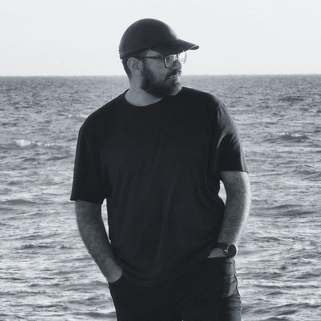

Software · IT & infrastructure · Design & 3D · Film & photography
I solve problems end to end — and look for the most efficient way to do it.
A full-stack developer and IT manager with a background in architecture, film, animation and photography. Currently rebuilding the HR platform 200+ people use every day.
- 8 yrs
- running IT for a multi-branch business
- 200+
- staff using the internal platform I built
- 156
- animated episodes produced for TV
- 55,000+
- product images shot and catalogued
01How I work
- 1
Understand
Ask questions until the real problem — not just the request — is clear.
- 2
Choose the efficient path
Compare options and pick the simplest one that will last. Adapt what exists; build only what’s missing.
- 3
Build it properly
Whether it’s software, a network, a film or an event: structured, documented and finished.
- 4
Keep it running
Backups, maintenance and support, so the solution still works years later.
02About

I work across disciplines. Since 2018 I have been responsible for technology at the optical and contact-lens division of Noor Eye Hospital in Tehran — servers and networks, business software and data, and the internal tools more than 200 staff use every day. Before and alongside that, I studied architecture, produced and directed documentary and animation for national television, photographed for a magazine and for brands, and opened two book cafés.
What connects all of it is how I approach a problem. I ask questions until the real need is clear, compare the options, and choose the simplest path that will hold up — adapting an existing tool when it fits, building from scratch when it doesn’t. I’m self-taught in software; I learn what a problem requires, and I finish what I start.
I value fairness and clear communication with the people I work with.
03Selected work
01
Internal automation platformSoftware
2025 — Present
- Context
- The goal: one system for HR and internal workflows, shared by every branch, with less manual and paper-based work.
- What I did
- Designed and built a web platform from scratch for HR and internal workflows.
- Leading its redesign, now in progress.
- Outcome
- Used by 200+ staff.
02
Vtiger CRM, localized for a Persian businessSoftware
2026
- Context
- The company needed a CRM that works natively in Persian. Instead of building one, I adapted the open-source Vtiger CRM.
- What I did
- Jalali calendar throughout, full Persian translation and right-to-left layout.
- SMS integration and a PBX Manager to log and track customer calls.
- Background workers that keep customer statuses up to date automatically.
- Outcome
- The company CRM, used by 80+ people.
03
Infrastructure, backups and data migrationIT & data
2020 — Present
- Context
- One person responsible for every server, workstation and business system.
- What I did
- Run 3 servers (Windows Server and Linux) and 120+ workstations: SQL Server, MySQL, Apache and cPanel.
- Set up a WireGuard private network and a full backup and recovery strategy.
- Migrated data between sales and accounting systems — Sepidar, Arian System, Nemesys and Holoo.
- Outcome
- Six years of records migrated with no data loss.
- Linux
- Windows Server
- SQL Server
- WireGuard
04
Product catalog and online storePhotography · Data · Web
2018 — 2023
- Context
- Thousands of eyewear and lens products had no structured digital catalog.
- What I did
- Built Lens Finder, a PHP platform for managing and selling the lens catalog (2018–2020).
- Led a 7-person photography and data-entry team, and shot most of the products myself.
- Launched the online store in 2020 and managed online sales until 2023.
- Outcome
- 7,000+ products and 55,000+ images catalogued.
- PHP
- MySQL
- WordPress
- Product photography
05
Farayand — animated seriesAnimation
2019 — 2024
- Context
- A long-running animated series, produced over five years.
- What I did
- Produced seasons 1–3.
- Directed and animated season 3 (26 episodes).
- Outcome
- 156 episodes delivered across three seasons.
- Production
- Direction
- Animation
04Capabilities
Software development
Internal platforms, CRM customization and online stores.
Next.js, React, TypeScript, JavaScript, PHP, Python, C++, HTML & CSS, Tailwind CSS, Frappe, WordPress, PrestaShop, Vtiger CRM
IT & infrastructure
Sole IT lead for 200+ staff, 120+ workstations and 3 servers.
Linux, Windows Server, Docker, Apache, cPanel, WireGuard, Secure networking & tunneling, Proxy infrastructure, VoIP / PBX, Git
Data
Six years of sales and accounting records migrated with no data loss.
PostgreSQL, MySQL, SQL Server, Backup & recovery, Data migration, Sepidar, Arian System, Nemesys, Holoo
Architecture & 3D
B.Sc. in architecture; 3D since primary school.
3ds Max, Blender, Revit, AutoCAD, Lumion, iClone, Character Creator
Film & animation
Producer, director, animator and editor for IRIB and Sima Film.
Premiere Pro, After Effects, iClone, Character Creator
Photography & design
Architectural, product, portrait and industrial photography.
Photography, Photoshop, Illustrator, InDesign
Business & events
Two book cafés, two startups, retail launch events and a 2,000-visitor event.
Planning, Operations, Marketing, Team leadership
AI-assisted work
AI tools used daily across development and operations.
Claude Code, Cursor, OpenCode, Antigravity
05Experience
2018 — Present
IT Manager Contract
Noor Eye Hospital — Optical & Contact Lens Division · with its affiliate Tavan Gostar Tiam
Sole IT lead for a multi-branch business with 200+ staff and 180,000+ customers. Joined as a freelance developer in 2018 and have been responsible for all technology since 2020. Also a member of the ideation and marketing team.
2015 — Present
Founder
Moroor Studio — Web Design & Photography · freelance since 2014
Websites including 7kala.ir (a custom PrestaShop store, 2014), c1p.ir for Sivan Parsian (2014) and Hamayesh Sazan Rasha (2017). Clients include Digi Service Holding (DGLand) — launch events for its first retail stores, 2022 — and Hamrahtel, for product photography of its AKO brand, 2023.
2017 — 2018
Head of Digital Media
Hamayesh Sazan Rasha — Events & Conferences
Ran the digital and social media department. Built the company website and websites for its clients.
2014 — 2015
Computer & Laptop Technician
Self-employed
Hardware and software repair for laptops and desktops.
06Ventures
2019 — 2020
Founder
Book Café 27
Opened and ran a book café on Bozorgmehr Street, near Vali-e Asr Crossroads in Tehran’s Enghelab area. Closed in 2020 due to COVID-19.
2019 — 2020
Co-founder
Moroor Book Café
A second book café on the same street, opened the same year. Closed in 2020 due to COVID-19.
2018
Co-founder
zooddl
Downloaded hard-to-get files for customers and delivered them on hard disk or DVD. About 70 customers in its first months.
2014
Founder
sky3d.ir
A free 3D-model download platform.
08Timeline
- 2000
My first computer, at five.
- 2005
Fifth grade: I start teaching myself 3ds Max.
- 2010
I start on web development, programming and visual effects.
- 2011
My first programs, in C++.
- 2013
I begin a degree in architecture.
- 2014
World Cup TV teasers, my first commercial websites and sky3d.ir. Laptop repair on the side.
- 2015
I found Moroor Studio, co-organize Architect’s Day (2,000+ visitors) and enter a short film in the Film 100 festival.
- 2016
Architectural photography for Naghsh-e Memar; I start editing Oral History of Iran.
- 2017
I direct a documentary for IRIB Channel 4 and head digital media at an events company.
- 2018
I graduate and build Lens Finder for Noor Eye Hospital.
- 2019
I open two book cafés and start producing Farayand.
- 2020
I become IT manager at Noor and launch its online store.
- 2022
Launch events for DGLand’s first retail stores.
- 2023
Product photography for Hamrahtel’s AKO brand.
- 2025
I build the internal automation platform.
- 2026
The localized CRM ships; the platform gets a redesign.
09Education
2013 — 2018
B.Sc. Architecture
Islamic Azad University, South Tehran Branch
Co-organized Architect’s Day at Arasbaran Cultural Center (2015), with 2,000+ visitors. Head of the Digital Media Club and deputy of the Film & Photography Club. Everything else — software, infrastructure, 3D, film and photography — self-taught.
10Languages
English
Intermediate (strong listening, conversational speaking)
11Interests
Tennis
Regular player for several years; basketball before that.
Nature
Travel to forests and green, quiet places.
Persian cooking
Traditional dishes, cooked slowly.
Reading & podcasts
Psychology and personal growth — Choice Theory by William Glasser is the book I recommend most.
Philosophy
Ethics and questions about people and society.
Astronomy
An amateur interest.